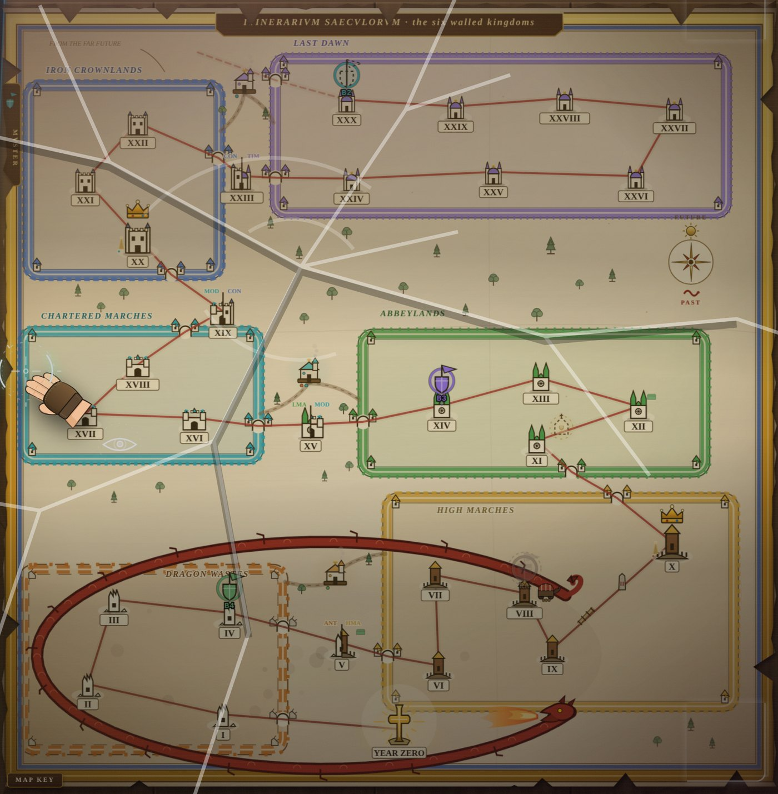
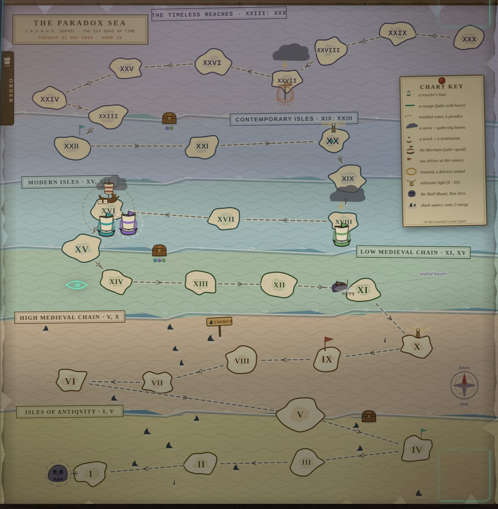
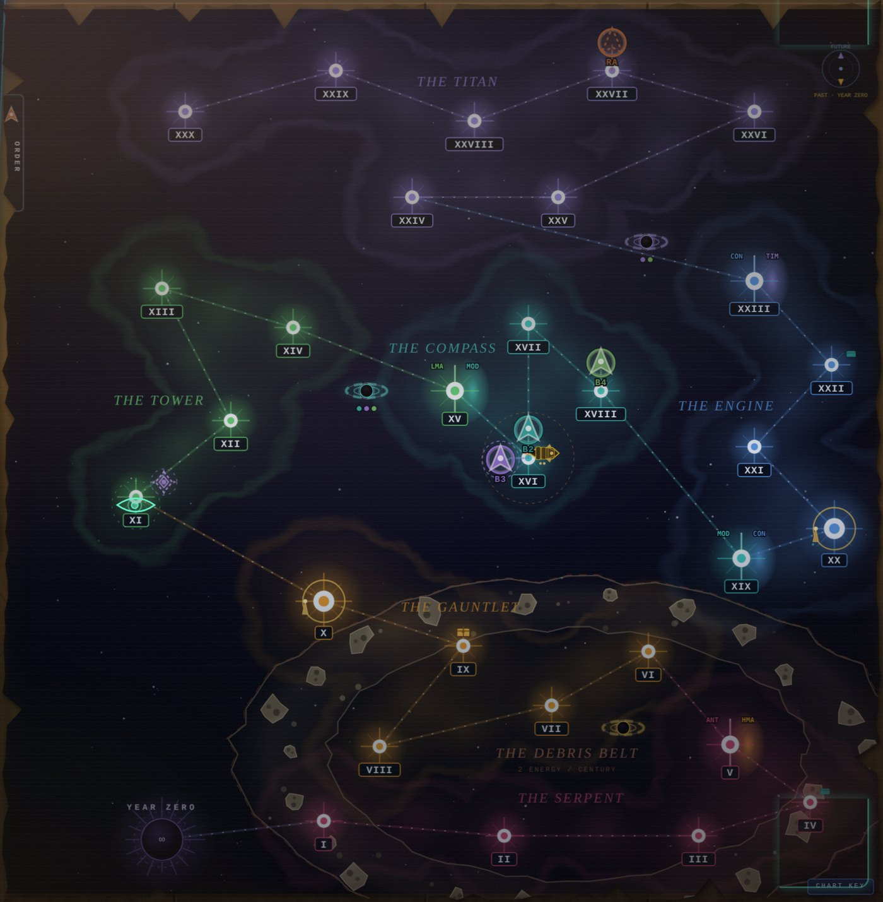
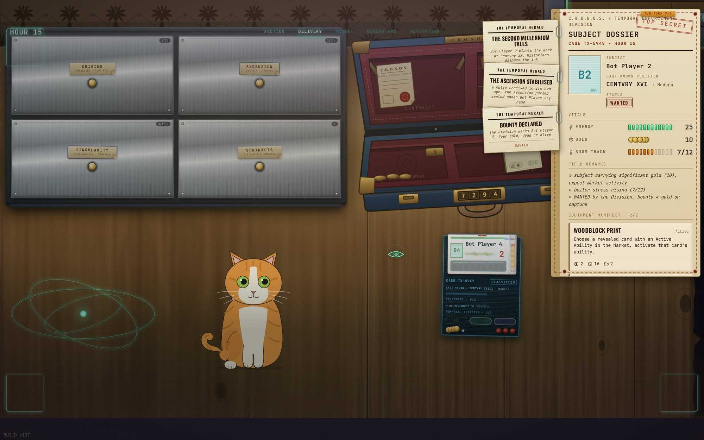
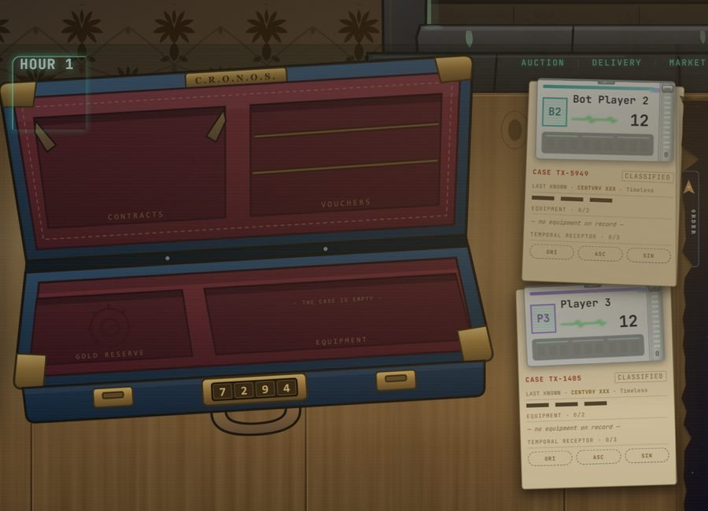

Return each object to the century it came from.
Every card is an object that really existed and was torn out of the century it was born in. Returning it to that exact century is what scores.
There is a single track: from the 30th century, where the two to six travellers start, down to Year Zero, just below the 1st century. Going up is free. Going down drains energy, and energy is life.
And the value is not all behind you. The most expensive pieces are spread along the whole line, from the Spear of Destiny in the 1st century to the First Time Machine in the 30th. So every trip is a trade: how much life to spend on the road to a piece, knowing that whoever steps on Year Zero ends the match for everyone.
The map changes with the era you are in.
The track never changes: thirty centuries and Year Zero. The drawing changes with the period your traveller is in. From the 1st to the 10th century you read a map of walled kingdoms; from the 11th to the 19th you sail the Paradox Sea, with islands and currents; from the 20th to the 30th you read a star chart, with the constellations and the dead sun of Year Zero. Every map marks the same danger, the deep past below the 10th century, where each century back costs two energy instead of one: the kingdoms draw it as a serpent, the sea as shark waters, the stars as a debris belt. The three images are the same match, at the same Hour 17, seen from three different seats.



Everyone decides in secret, then everything resolves in order.
A turn is called an Hour and always runs in the same order: Delivery, Market, Generators, Activation. In the Generators phase everyone rolls four dice and secretly assigns them to a three-by-three grid. Only after everyone locks in are the grids revealed, and they resolve together, module by module, from 1 to 9.
That is why a paradox thrown at the future always happens before one thrown at the past, even when both were decided in the same instant.
§29.7 · full loadAll four generators must be assigned. There is no keeping a die and no blank Hour.§29.5 · one value per functionGenerators in the same function must show the same value. A varied roll forces you to spread out.§29.4 · linear progressionModule N only takes a generator if module N-1 is occupied. To reach the good one, you pay for the weak ones first.§29.6 · overloadThree generators in one function lock it for the next Hour. Your strongest turn is the one that leaves you limping afterwards.

Three rules that shape every match.
Death does not eliminate
Dropping to zero energy means being Terminated: your objects are recycled and you return to the 30th century with twelve energy plus whatever you recycled, your gold untouched. You come back immune while you stay in the Timeless Period, and the immunity is spent for good the moment you set foot in the Contemporary again. In the end, dying costs exactly one point.
The merchant is a pendulum
The Merchant moves at the end of every market phase, and where he goes is not random: he heads toward the richest traveller who is not already with him. Buying spends gold, and whoever spends stops being the richest. Getting rich is what calls the shop; using the shop is what sends it away.
Crimes make the news
Robbing the Merchant or terminating a rival makes you Wanted. The Temporal Herald, the table's newspaper, prints an edition with your name, and it stays clipped to your file for the rest of the match, where every traveller can read what you did.




Engineering, myth and crime on the same shelf.
The deck has no hierarchy. Excalibur costs two gold and Turing's machine costs one, and every card keeps the exact century it came from: there, and only there, can it be returned. Forty cards stay with the Merchant and twelve, drawn at random each match, wait in the Secret Market, fixed in the 11th century.

The match does not end by counting rounds.
It ends the instant the first of these four things happens, and all four are always within reach of whoever wants to force them. Whoever holds the most Contract Points when time settles is crowned Monarch of Time.
§11.1 a · Year ZeroA traveller reaches the last space of the track and ends the game on their own time, not everyone else's.§11.1 b · full receiverA traveller delivers in all three periods. The methodical collector's win against the runner.§11.1 c · last one standingOnly one traveller is not Terminated. Wearing the table down to death is a strategy, not an accident.§11.1 d · Merchant's stockThe Merchant runs out of cards. The economy dries up, and whoever buys too much speeds up this ending without noticing.
What playtesting changed.
About twenty people played with me. The feedback that kept coming back was repetitive strategy, and the fixed market was to blame: whoever memorised the window always played the same way. Replacing the standing shop with a merchant who moves every Hour fixed it, and on top of that created the gold pendulum.
Since then, every rule change goes through a batch of a thousand matches with a fixed seed before it enters the game. The simulator that runs this measurement is public, with the engine, the four player profiles and the tests.
The game is finished and it runs.
Paradox V1 is a complete board game in a digital version: rules engine, server, interface and bots that sit at the table with you. It plays from start to finish, online with friends on the same network or from different houses through a private network, as a desktop app for Windows and Linux, and up to four people can share one screen with controllers. A demo runs right in the browser, solo against the AI opponents, with nothing to install. The game's code is not public. The next step is an always-on server, so anyone can join a match by code.